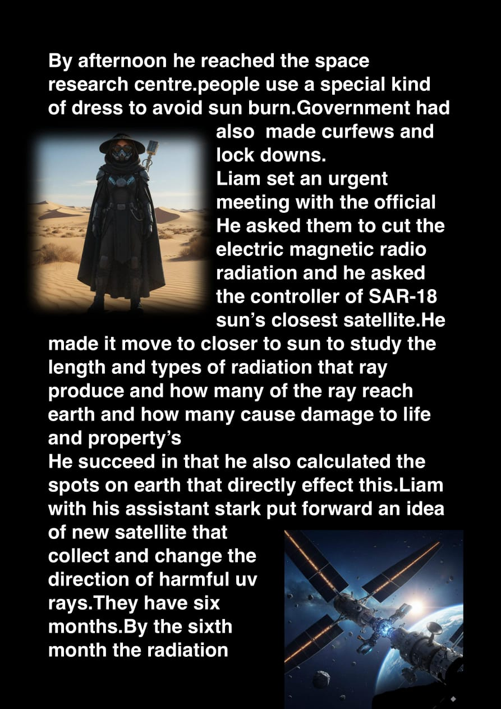
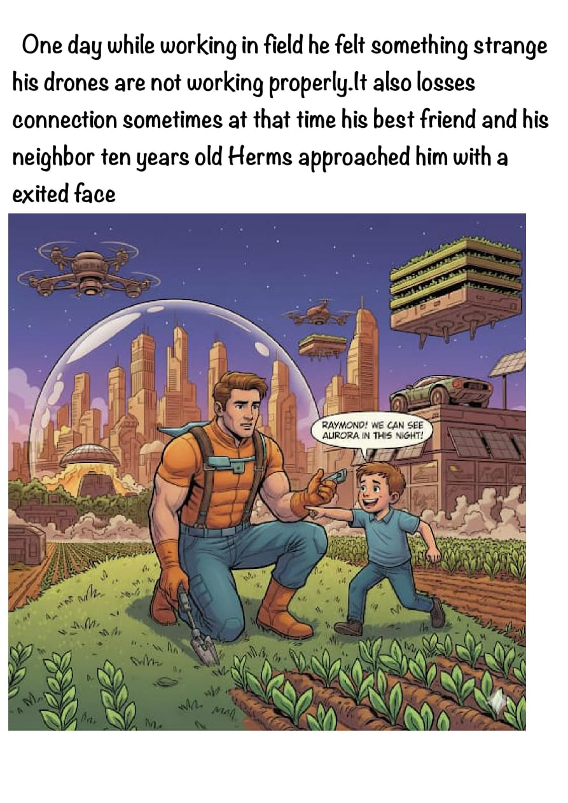

"The Sun's Windy Magic"
One morning,
Lina woke up and felt something strange
her phone is not working . The lights turned off , and the radio kept cutting in and out.
She went outside, where her father was repairing the bike.
She asked" is there any power cut"
"Kind of" he said.
Her dad looked up from his phone, checking the news.
It's a solar storm, he said.
Lina was confused." but the weather is good"she said .
Her dad smiled.
It is not a storm from earth, a storm from the sun..
Sometimes, it releases giant bursts of that energy into space ,like it did two days ago.
At school, her science teacher explained everything. A huge solar flare had erupted on the Sun's surface two days earlier, and a wave of charged particles just reached Earth.
The Sun is always moving, the teacher said. Sometimes it releases big blasts of energy. We call them solar flares.
Those blasts send tiny charged particles flying through space,she continued. When they reach Earth, they shake up our planet's magnetic field. That's what we call space weather.
Lina's hand shot up. Is that why my phone didn't work this morning?
Yes, said the teacher.
Solar storms can mess with power lines, GPS, and even airplanes in the sky. But they can also do something beautiful.
That day, Lina's uncle and his team worked hard to keep the electricity running. Airlines rerouted polar flights to avoid higher radiation levels. Farmers in nearby regions noticed problems with their GPS-guided tractors. Even satellites had to switch into safe mode to avoid damage. On the International Space Station, astronauts moved into specially shielded areas until the radiation passed.
That night, Lina and her family stood outside in their backyard. The sky was dark, but something magical was happening. Green and purple lights were dancing above the trees. Auroras, her dad whispered. We don't usually see them this far south. But when the Sun sends a strong storm, the lights travel farther. Lina couldn't look away. The colors waved and shimmered like curtains made of light. Lina looked up at the sky and smiled.
Blank Black
Blank Layout
A Comet That Brought The Rain

A comet named Stella used to roam joyfully through space. She loved watching thewonders of the universe — stars, planets, and galaxies. But most of all, she loved a little village on Earth. The green forests, the flowing rivers, the dancing plants, and the cheerful people always filled her heart with happiness.
One summer night, while gliding through the sky, Stella looked down and was shocked. The rivers had dried, the plants looked weak and thirsty, and even the people, children, and animals seemed tired and sad.Stella’s heart ached. “Oh, if only I could help them,” she whispered. She knew that only water could bring life and joy back to them.
So, Stella called out to her friends — the rain clouds. There came Lite Cloud, soft and gentle, and Harder Cloud, strong and heavy. They floated to her side and listened carefully.
“The Sun is burning fiercely,” Stella said. “Its rays scorch the Earth, and all living beings suffer. My friends, I ask you — please shower your blessings upon them.”
The Wind promised to carry the clouds to the village, and the Moon shone down, showing them the path. Soon the clouds gathered, looking like puffy sheep in the sky.
At last, the clouds began to pour. Plop, plop, plashhh! The thirsty Earth drank eagerly. People ran out with smiles, folding their hands in gratitude. Children laughed and danced in the puddles. Birds sang, and animals pranced with joy. The plants swayed as if dancing to the music of the rain.
High above, Stella watched. She glowed more brightly than ever, her tail sparkling across the night sky. She was shining with the happiness of the village below.
Whisper 's of the Sky
It was a beautiful day with calm weather, and I liked being a part of it. Anna was exhausted from work, and since she was on leave today, she finally had some time to rest. Tomorrow was her presentation about space weather. She felt confident about it, but at the same time, she was nervous about how it would turn out.
That night, she stood on her balcony, looking at the stars and thinking about her childhood. After her parents’ divorce, she often traveled from one place to another. During holidays, she stayed with her grandmother. Being an only child, she cherished those moments deeply being with her grandmother was the best part of her life. Her grandmother would tell her stories about the stars, Earth, Sun, and Moon, and they often went stargazing together. Anna loved watching sunsets and sunrises.
One evening, as she lay in her grandmother’s lap, she saw a weather forecast on TV. A lady was presenting the weather, and Anna was fascinated. How do they know all this? she wondered. That day, she decided she wanted to become a meteorologist.
During one summer vacation in her grandmother’s small village, Anna witnessed something magical at night a purple and green curtain-like light in the sky. As a meteorology student, she was curious and kept thinking about what caused it. When she returned to college, she began researching it. One day, her professor explained: those lights were auroras, an effect of the solar wind, which is a stream of charged particles flowing from the Sun’s outer atmosphere, called the corona.
Fascinated, Anna chose this topic for her research. Now, as she prepared for her final presentation, it felt like a dream from childhood stargazing and watching weather forecasts, to becoming a space weather scientist.
The day of the presentation arrived. Anna was ready, though still nervous. She waited in the hall as her friend finished presenting. When her turn came, she stepped forward and her presentation went wonderfully.
That night, sitting on her balcony with a cup of coffee, she gazed at the stars. Suddenly, she saw an aurora in the sky. Excited, she began filming it. At that moment, the power went out, leaving the world in darkness. The sky, painted with lights, looked more beautiful than ever. Anna smiled and simply enjoyed the view.
At that time in the sky, Zara was flying to visit her dearest friend, Anna, to spend some time with her. But when they were about to land, suddenly the radio went black, the GPS stopped working properly, and communication between the pilot and others was disrupted. Everyone started to panic, thinking it was the end of them. The flight had to take a detour and flew for another four hours until the radios and GPS started working again. Finally, the flight landed safely, and everyone returned home.
Zara was on her way to surprise Anna. She quietly entered Anna’s apartment. Anna was sleeping on the couch. Suddenly, Zara woke her up. Anna jolted awake, completely surprised to see her, and they hugged tightly. They spent their time shopping and doing things they loved. When Zara told Anna what had happened during the flight, Anna just laughed it off she knew the reason behind it better than Zara did.
Later that night, Anna stepped onto the balcony and looked up at the stars. She knew exactly why the flight’s instruments had failed the solar storm she had been studying had reached Earth’s atmosphere that day. Smiling faintly, she whispered, “Space weather… you never fail to surprise us.” Inside, Zara laughed at something on the TV, unaware that her adventure had been written among the stars.
Mystery of the Power Grid
Malu was a curious seventh grade student who loved scientific things. One evening, while sitting with her family, the lights suddenly went out.
“Ugh! Another power cut!” her mother said. But then a thought struck her — Where does electricity actually come from?
The next day at school, Malu asked her science teacher, Ms.Reshma, “Ma’am, how does electricity reach our homes?”
Smiling, she said, “That’s a great question, Malu. Why don’t you find out and tell the class tomorrow?”
Excited, Malu began her little investigation.
Shee first visited the power station near her uncle's house.
She saw an engineer who works at the power station.She asked her question and the friendly engineer explained,
We produce electricity here using turbines and generators. This is called power generation.”
Malu watched huge machines spinning. “So this is where it all begins!” she thought. Then the engineer showed her tall towers carrying thick wires stretching across fields. And he added, "These carry electricity over long distances. This is the transmission system. The voltage is very high so that less energy is lost.”
Later, Malu noticed a smaller station with transformers and wires spreading in many directions.
"Here we reduce the voltage,” said the engineer. “This is called a substation. From here, electricity goes to homes and schools through the distribution system.”
Malu nodded, now seeing the big picture.
That night, back home, the lights were glowing brightly again. Malu smiled.
Shee wrote in her notebook:
"Electricity is produced at power plants (Generation), sent through long transmission lines (Transmission), and finally distributed to our homes (Distribution). Together, they form the Power Grid — the invisible network that lights up our world.”
Next day she goes her school,and she's excited to explain her investigation.
When she presented her findings in class the next day, everyone clapped — including Ms. Reshma.
She said proudly, “Now you truly understand how our power grid works!”
Malu Smiled Proud of her achievement.